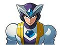
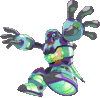

De: La Frikipedia, la enciclopedia extremadamente seria.
De: La Frikipedia, la enciclopedia extremadamente seria. De: La Frikipedia, la enciclopedia extremadamente seria.
MegaMan X6 (ロックマンX6 ROCKSTAR X6) es el sexto juego de la trilogía de 8 juegos de Megaman X, desarrollado, creado, distrubuido y vetado por CAPCOM... su creador es Kenji Inafune, friki inspirado en la serie original de Rockstar, está disponible en todas las consolas PS2, PsONE, Gameqiub y Hasefroch.
El juego tuvo una fuerte crítica por no tener calidad gráfica, faltas de ortografía y alta dificultad además de mostrar nudismo sin censura cosa muy mal vista en japón.
En el año 2OXX (dos mil veinte) 20 días después de la historia de Megaman X5, un científico llamado GATES (tatara nieto de Bill Gates), mientras está buscando algo para comer en el desastre, justo en ese momento mientras se pregunta ¿Porque los niños en África mueren? ¿Porque me dejo mi novia? ¿Acaso me habrá contagiado herpes?, ve un chip en el cual se encuentra el ADN del ébola Virus Zero, y en el se encuentra Sigma (la clave para hacer sumatorias en calculo y física).
Gate se lo roba lleva a su laboratorio para analizarlo y ahí su Igor llamado Isoc le sugiere y más tarde decide usarlo para acabar con el hambre del mundo crear un robot super saiyan, desafortunadamente solo obtuvo una chatarra negra con la cara pálida al cual le llamo High-Max (el Drogado-Max) el cual se cree el robot supremo por tener ADN de Gay sueña entonces con un mundo sin humanos solo para los reploids y mientras se imagína las orgías que los reploids harían con el, decide enviar al Drogado-Max para hacer Gay es infectado con el Virus SIDA Zero.
En la destrozada choza a la cual los Maverick Hunters le llaman H.Q (JedCuarters) se empieza a propagar la posible existencia de Zero Super-Metrosexualizado (Zero Nightmare), y mientras X sueña en su cabina de recuperacion con las guarreces que le haría a Zero, Alia lo despierta pues un robot gigante con cara de malo se ha puesto a destender la ropa del tendedero. Ahí recibe el posible avistamiento de Zero, y va corriendo con el sable de su amigo a la zona del desastre.
Ahí llega X, tras haber hablado con 2 mavericks X moja la ropa interior.
En ese momento aparece el Drogado-Max y le reta a averiguar quien es el más fuerte, tras no poderle hacer ni un rasguño el le dice que lo espera en su cama a las 10 el nunca lo vencerá y que exterminara al Virus Zero. Entonces X tiene que vencer a 8 Mavericks que quieren utilizar apoderarse del Virus. En el transcurso de la historia (y si es que logras desbloquear a High-Max y al haber derrotado a este, pelearas contra Dynamo, otro robot mascota de Sigma. A mitad de la historia Alia te dirá que te ama aun siendo gay ella y Gay fueron antiguos colegas en Harvard, pero como este era un robot muy estúpido y Alia siempre tenía excelencia académica (además de bajarle el novio) le tomo rencór.
Al haberle derrotado a sus mascotas, la Célula y el Drogado, X se enfrenta a Gate... entonces Gate demuestra que el es el ser robótico más metro-sexualizado del mundo y enfrenta a X... Gate pierde y entonces, como ultimo recurso, revive a Sigma, el cual se encontraba en su cuerpo. Como es el muy malo y Gate estaba hecho mierda, Sigma le dice que ya no lo necesita y le hace un Hadouken en el pecho, Gate grita como niña y a X le dice que también lo espera en su cama a las 10 le haría lo mismo.
Al llegar a la guarida de Sigma (el laboratorio de Gate pero sin luz) X debe enfrentarse a todos los robots que ha destruido. Tras ese pequeño viajecillo, X pelea contra Sigma, el estaba en el taller porque se le gastaron las balatas y caminaba como zombie, tras haberlo derrotado fácilmente sigma se rie como tarado y le empieza a decir estupideces a X y como siempre... aparece en una versión si no gigante, poderosa de él. Tras haber derrotado a Sigma, Alia llora en el armazón de Gate y entonces Douglas le dice que podrá repararlo si antes le hace un privado. Zero se pone a dormir por 100 años y X vuelve a soñar con Zero.
| Personaje | Descripción |
|---|---|
| X |
El principal
|
 Zero |
El otro protagonísta tras haberlo desbloqueado (derrotado) el peleara a lado de X y tras derrotar a Sigma, se hará unos analizis de orina mientras duerme, esto con el fin de detectar y eliminar al Virus que hay en su interior. Cuenta con el Buster de su mano derecha (aunque al igual que X con el sable... apestan), este es más efectivo contra enemigos no a una larga distancia.
Nightmare Zero, el virus super-metrosexualizado, es en esencia Zero, por lo cual tiene sus ataques... su saber se vuelve gris al igual que su Buster, su giga-attack es el mismo que en todos y además al pelear con el su risa suena de lo más dudosa. |
|  Gate |
El antagonista secundario (tiene un complejo homosexual), este se infecta con el Virus Zero, el cual corrompe su alma sacrosanta y comienza a hacer maldades con sus mascotas High-Max y junto a su ayudante Isoc, al pelear con él su aspecto cambia de morado a |
 Sigma |
El malo más malo del mundo, y para joderla, nunca muere... es el robot más difícil de matar (equivale a Bruce Willis) este está totalmente deshecho pues nunca se restauro y camina como borracho, sus ataques son fuertes pero son predecibles, al estar en su robot gigante, se vuelve más ofensivo y difícil, pues expulsa a copias de el pero en moco además de tener un cañon localizador y un super-buster en su boca. Al matarlo grita de lo más gracioso. |
 High-Max |
Antagonísta secundario, es la creación de Gate tras haberle insertado el ADN de zero... tiene un complejo de superioridad y solo se le puede derrotar mientras está congelado... al final se lamenta por el hecho de como un robot antiguo como X lo pudo derrotar y se super explota BUUUUM!. |
Empezaremos por los jefes de escenario:
| Personaje | Descripción |
|---|---|
| Rainy Turtloid |
Tortuga con muy mal caracter además de ser extremadamente |
| Blizzard Wolfang |
Lobezno |
| Blaze Heatnix |
Guajolote malhumorado a medio cocinar que tiene la costumbre de incendiar medio escenario mientras peleas con el o con una de sus roscas mecánicas. Su ataque final es descubrir que puede volar y atacarte al mismo tiempo. Su debilidad es el ataque de Ground Scaravich. |
| Ground Scaravich |
Escarabajo Pelotero robótico que quiere adueñarse de los recursos terrestres del planeta una vez puesto el plan de |
| Commander Yammark |
Libelula humana esquizofrenica traicionera que ha decidido unirse a Gate para destruir a los Reploids, su ataque consiste en invocar a sus hijillos para que disparen, lo protejan, lo sigan o te viólen. Al matarlo se te queda la custodia de sus hijos y los puedes usar como todo Japonés Kamikaze. Su debilidad es el ataque de Infinity Mijinion. |
|  Infinity Mijinion |
Es el resultado de un estornudo de Sigma gigante, es básicamente un moco que puede reproducirse el solo (probablemente se haga el famoso Candado), Su ataque máximo es caerse de sentón al piso e invocar un láser supermegamolón. Su debilidad es la espada del metrosexualizado |
| Shield Sheldon |
Es una ostra malparida que desde chiquillo supo defenderse. Su ataque máximo es invocar 4 escudos que disparan a todos lados. Su debilidad es el ataque de Metal Shark Player. |
 Metal Shark Player |
Es un tiburón martillo de metal que vive en un depósito de chatarra en el cual su hobby es hacer camaleónes de metal. Su mayor ataque es crear jefes de series anteriores para que te ataquen. Su debilidad es el ataque de Rainy Turtloid.
Y LA HISTORIA SE REPITE... |
| Nightmare Phenomenoms |
Estos solían ser Reploids viviendo en la colónia |
Es la misma temática que los juegos de Megaman X partiendo del 4o... al principio solo puede utilizarse a X en la Falcon Armor (procedente del X5), pero se pueden obtener nuevas armaduras consiguiendo las cápsulas escondidas en cada escenario. A zero solamente se le puede integrar la Black Armor si te la has pasado 20 días sin guardar.
Los Nightmare Phenomenoms al destruirlos te dan pesetas orbes, los cuales al obtener aumenta la capacidad de mejoras, son 25 y se obtienen al rescatar a los reploids que piden ser violados ayuda, además X cuenta con el sable de Zero el cual vilmente robó de su cadaver, es un inútil usandolo pero con el rapid slash es dañino. Zero tiene un nuevo sable y nuevas habilidades, su giga ataque nunca cambia y trae el buster integrado.
Como siempre, se buscan corazónes para aumentar la barra de vida y hay zonas alternas con un jefe diferente.
Además, dependiendo del nivel al que ingreses este afectara el escenario del otro, apareciendo algún elemento relacionado con el que te acabas de cargar, siempre aparecen de color rojo y pueden tocarte los cojones hasta que te cabrees dificultarte el juego.
Autor(es):